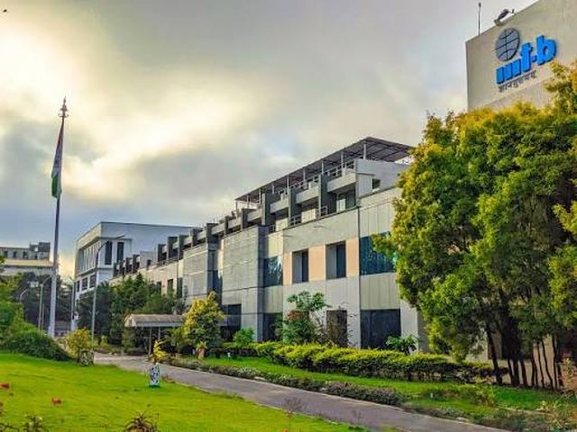
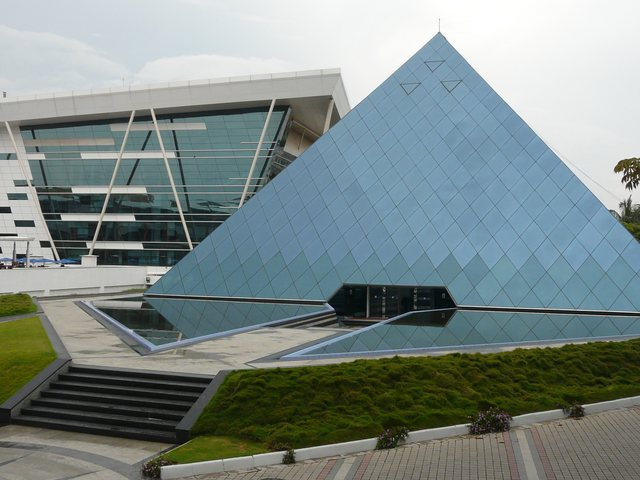

From enterprise QA
to federated learning research.
Two years in enterprise software at Infosys, followed by about three years moving into ML research — first at IISc, now at IIIT-B.
Work Experience
Working on data governance, with a focus on NLP-driven tooling. Contributing to Anumati, a consent-management prototype for public data infrastructure being built with DPDP and GDPR requirements in mind — a multi-partner effort with IISc-CDPG, CDAC, and IUDX under MoHUA and MeitY, where I own specific components rather than the whole project.

Worked on federated ML algorithms and privacy-preserving aggregation — mostly looking at how client heterogeneity and clustering choices affect the trade-off between performance and privacy. Also put together a literature survey on federated learning in healthcare and multi-modal fusion.
TA'd undergraduate CS courses and computational robotics labs, and helped a few students scope their own project work. Alongside that, this is where I did the M.Tech research that became my thesis on federated GNN aggregation, with an early look at quantum aggregation.

Tested and validated core banking systems (Finacle) — mostly database and front-end components. Helped tighten a few testing workflows that reduced defects slipping into later release cycles. My first real exposure to what "reliable enterprise software" actually requires.

Technical Skills
Rough groupings, not a scorecard — some of these I use daily, others I've touched in one or two projects. Happy to go into specifics on any of it.